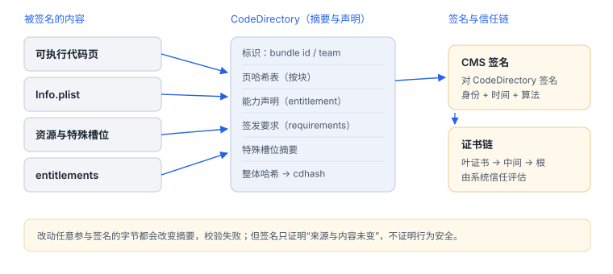

代码签名与完整性
签名是摘要树加一份能力清单，不是给文件盖一个章
签名把代码页、资源与权限声明一起做成摘要树，再用证书链签名。看懂它由哪几块组成，才能理解为什么改一个字节就失效、为什么能力能“凭空”出现在二进制里。
1. 五个组成部分
| 部分 | 内容 | 改动后果 |
|---|---|---|
| 代码页哈希 | 按块计算的页面摘要 | 改指令即失效 |
| CodeDirectory | 标识、页哈希表、特殊槽位、版本 | 整体摘要（CDHash）变化 |
| entitlements | 能力清单（沙盒、访问组、推送环境） | 能力与签名不匹配会拒绝启动 |
| requirements | “什么条件算同一身份” | 影响后续校验与替换策略 |
| CMS 签名 | 对 CodeDirectory 的签名与证书链 | 证书失效则整链失败 |
特殊槽位通常包含 Info.plist 与要求文件；资源通过资源清单参与摘要。因此“只改 plist 不改代码”同样会破坏签名。

2. 实机输出
Identifier=com.apple.ls
CodeDirectory v=20400 size=741 flags=0x0(none) hashes=18+2 location=embedded
Hash type=sha256 size=32
CDHash=72efae0707353da45c87a019a5ddd40bd3dc59f5<key>com.apple.security.app-sandbox</key><true/>
<key>com.apple.security.network.client</key><true/>
<key>com.apple.security.files.user-selected.read-write</key><true/>
<key>com.apple.private.hid.client.event-dispatch.internal</key><true/>读法：v=20400 是结构版本；hashes=18+2 是 18 个代码页槽位加 2 个特殊槽位；CDHash 随内容变化，不能当固定常量；能力清单里既有公开能力（沙盒、网络）也有私有能力（内部事件分发）。
Identifier=com.apple.calculator
Format=app bundle with Mach-O universal (x86_64 arm64e)
CodeDirectory v=20400 size=13037 flags=0x0(none) hashes=397+7 location=embedded
Platform identifier=16
CDHash=20fb09a2f83e1a538a2d13435a13345d500c2fc9
CMSDigest=20fb09a2f83e1a538a2d13435a13345d500c2fc9b75ef9be3a1e81e13a2de328
Authority=Software Signing读法：hashes=397+7 说明页哈希有 397 条、特殊槽位 7 个（应用包比命令行工具多得多）；Platform identifier=16 表示平台签名；CDHash 是对 CodeDirectory 的摘要，而 CMSDigest 是签名覆盖的更完整摘要，两者前缀相同但长度不同——不要把二者混用。
3. 原理推演：为什么按页哈希而不是整文件哈希
可执行文件不是一次性读进内存的：页按需调入、按需丢弃。如果签名只覆盖“整个文件的哈希”，校验者就必须先把几十 MB 全读一遍才能判断一页是否可信——这会让启动变慢，也无法支持按需分页。
按页生成摘要后，每页可以在调入时单独校验，未加载的页不必读。代价是摘要表本身要占空间（hashes=397+7 里那个 397 就是页数），并需要一个总摘要把这张表锚住——这就是 CodeDirectory 与 CDHash 的关系。
4. 三处校验
- 安装/注册：签名结构完整、描述文件允许该设备与能力。
- 进程启动：可执行文件签名有效，entitlement 与签名主体一致。
- 运行期：按策略对代码页做完整性检查（并非每页每次访问都检查）。
5. CDHash 的用途与边界
| 能用来 | 不能用来 |
|---|---|
| 本地核对两个产物是否同一份 | 作为业务常量硬编码 |
| 在构建归档里做索引 | 证明运行期未被改动 |
| 排查“装的是不是这版” | 防篡改的唯一手段 |
它随构建内容变化，且只描述磁盘产物；把它写进客户端做“防篡改”会在每次发版失效，也看不到运行期的改动。
6. 一次真实排查记录：TestFlight 启动即退出
- 现象：开发构建正常，分发构建一启动就退出，崩溃报告里没有业务栈。
- 先分类：无业务栈通常不是崩溃，而是被系统拒绝加载，重点看终止原因与签名信息。
- 对比能力清单：分别导出两个构建的 entitlements，逐项比对；常见差异是推送环境、钥匙串访问组、调试能力。
- 核对描述文件：后台已开启的能力，描述文件是否同步更新；未更新时构建阶段就会剥离。
- 结论与限制：记录“分发构建缺少某项能力”，并注明该结论只对当前描述文件与后台配置成立。
7. 证书与重签
开发期用开发证书与描述文件，声明设备、App ID 与能力；分发时由平台重新签名，但应用标识与团队归属仍体现在字段里。能力在后台开启但描述文件未更新，构建时会被剥离——这是“开发能跑、TestFlight 失败”的最常见原因。
8. 失败分流
| 现象 | 原因 | 查哪里 |
|---|---|---|
| 安装失败 | 描述文件不含该设备或能力 | 描述文件与后台配置 |
| 启动即退出 | 能力与签名主体不匹配 | entitlements 与实际签名 |
| 改一行配置就崩 | 特殊槽位参与摘要 | 是否改动签名覆盖的文件 |
| 重签后行为异常 | 能力被剥离或环境变化 | 重签前后 entitlements 对比 |
延伸：16 Mach-O 加载命令 · A08 实机输出索引 · 05 dyld 与程序加载
Authority=Software Signing
Authority=Apple Code Signing Certification Authority
Authority=Apple Root CA
TeamIdentifier=not set读法：TeamIdentifier=not set 说明这是平台签名（Apple 自签），不是开发者证书签名；三条 Authority 是证书链，顺序从叶到根。判断“是不是同一个开发者发的包”，看的正是 TeamIdentifier 而不是 CDHash。
Executable=/bin/ls
warning: Specifying ':' in the path is deprecated and will not work in a future release读法：命令只回显可执行路径，说明该二进制没有 entitlements。命令行工具常见这种情况；应用包则通常有沙盒、网络等能力。看到“空”不要当成命令失败，它本身就是一条结论。
9. 自测
- 为什么改 Info.plist 也会让签名失效？
hashes=18+2中的“+2”指什么？- CDHash 能证明什么、不能证明什么？
- “开发能跑、TestFlight 失败”通常先查哪里？